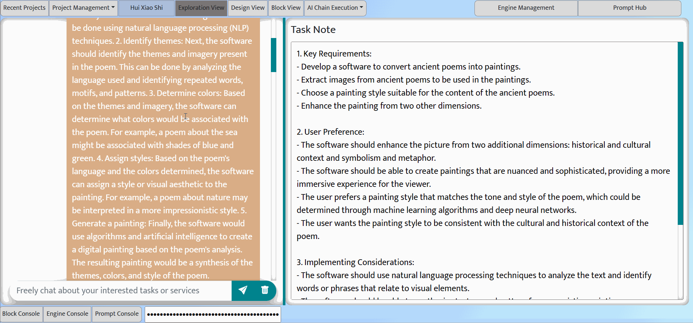

Exploration View
You chat with the LLM. Sapper IDE takes notes.
Exploration view: chatbot interface (left), task notes panel (right)
The exploration view supports activities in the exploration and initial design phases, allowing the user to obtain an approximate task model and challenges, and develop preliminary understanding of task decomposition, workflow, input/output data, and prompt effectiveness.
As shown in the above figure, the left part of the exploration view is a chatbot (currently a wrapper of GPT-3.5 API), working in the same way as common chatbot interfaces (e.g., ChatGPT interface). The chatbot allows users to have any type of conversation with the LLM. Of course, we assume that the users would talk around the AI service they need to support.
Different from a regular conversational chatbot, the exploration view is equpped a LLM-based co-pilot that automatically collects and analyzes the user's conversations with the LLM to obtain the broad task context (e.g., the concered AI service, user preference, things to avoid) that might be relevant to subsequent AI chain design and development. This co-pilot is an AI chain service built on top of the LLM (currently GPT-3.5). It works in a non-intrusive manner, and dynamically takes notes as shown in the Task Note panel from the conversions between the user and the LLM.